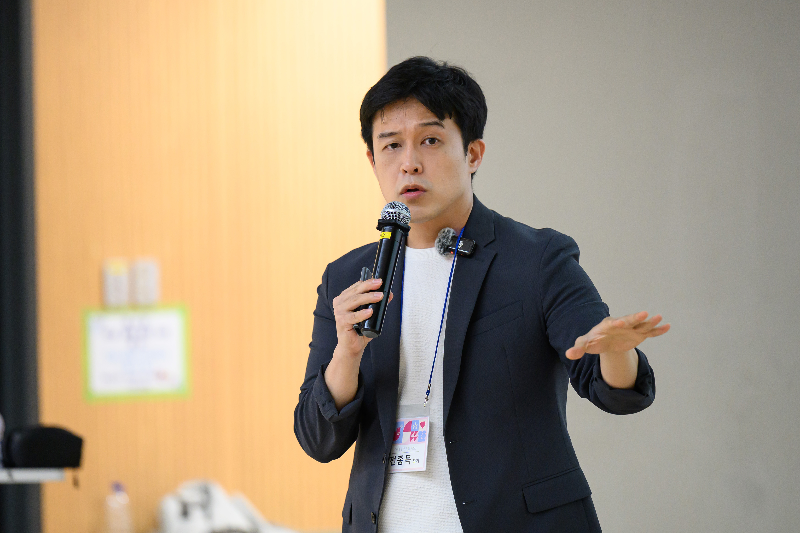

교수설계
- 대상자와 적용 상황을 구체화합니다.
- 학습 목표와 핵심 메시지를 명확히 정리합니다.
- 도입, 전개, 적용, 정리의 흐름을 재구성합니다.
자신의 강의를 한 단계 업그레이드하고 싶은 강사를 위한 2일 공개과정
교수설계 학습자 촉진 전달기법
현재 운영 중인 주력 강의 1개를 기준으로 교수설계, 학습자 촉진, 전달기법을 재구성하고 수정안을 도출하는 2일 공개과정입니다.
대상
현업 강사
기업교육 강사, 퍼실리테이터, 사내강사, HRD 담당자
결과물
주력 강의 개선안
핵심 메시지, 구조, 질문, 활동, 전달 기준 정리
참가비
110만원
부가세 포함, 교재·식사·음료 및 다과 제공

질문·토론·피드백 중심 2일 공개과정
상호 강의 검토와 피드백을 중심으로 운영합니다.
대상
참가 대상
주요 개선 과제
교수설계, 학습자 촉진, 전달기법을 기준으로 현재 강의의 구조와 운영 방식을 점검하고 개선합니다.
세 영역은 각각 따로 배우는 기술이 아니라, 강의 설계와 운영 전반에 적용되는 핵심 기준입니다.
전종목
기업교육 강사 · 과정 설계자
전종목 강사는 15년간 삼성, SK, 현대자동차, LG, ASML, 포스코, 한화 등 주요 기업과 기관에서 전달력, 리더십, 조직 커뮤니케이션, AI 활용 과정을 설계·운영해 왔습니다. 세상을바꾸는시간15분, TEDx, JTBC 말하는 대로 스피치 코치로 활동했으며, 기업 현장 맞춤형 과정 설계와 강의 운영 경험을 보유하고 있습니다.
15년 경력
분야
기업교육 · 발표 코칭 · 리더 교육
대표 이력
세상을바꾸는시간15분, JTBC말하는대로 강연코치
미래서울 전략회의 청년위원
주요 고객사
삼성, SK, 현대자동차, LG, ASML
포스코, 한화 등 주요 기업과 기관
과정 설계 이력
현재 역할
기점 인사이트 대표
전환설계연구소 소장
폴앤마크 Executive Trainer
이 과정과의 적합성
대표 강의 1편을 기준으로 재설계부터 적용과 피드백까지 2일에 걸쳐 정리합니다.
질문·토론·피드백 중심 운영
설명 중심 과정이 아니라 상호 검토와 피드백을 반영하는 방식으로 운영합니다.
1일차
1일차 종료 시점 산출물: 주력 강의 1차 구조안
2일차
2일차 종료 시점 산출물: 주력 강의 개선안 및 피드백
다음 강의에 바로 적용할 수 있도록, 운영 기준과 수정 포인트를 정리합니다.
주력 강의 개선안
학습자 중심 교수설계 적용 강의안
메시지 및 구조안
대상자, 학습 목표, 핵심 메시지 등 강의 핵심 요소
촉진 및 전달 기법
학습자를 움직이는 촉진 및 전달 기법
개인 피드백
강사 특성에 맞는 개선안
일정
2026년 5월 1일-2일
2일 공개과정
운영 방식
소규모 운영
토론과 피드백이 가능한 규모로 운영
참가비
110만원
부가세 포함
제공 사항
교재·식사·다과
교재, 식사, 음료 및 다과 제공
장소
문래오층
상세 위치는 아래 지도 링크에서 확인하실 수 있습니다.
참가 전 준비
참가 신청 전 주요 문의 사항입니다.
자신의 강의 콘텐츠가 있는 강사를 우선으로 합니다. 교수설계, 학습자 촉진, 전달기법을 함께 정리하는 과정을 배우는 것은 가능하나, 강의 경험이 거의 없거나 발표 기술만 단기간에 학습하려는 경우에는 적합도가 낮습니다.
이 과정은 실습과 피드백의 밀도를 위해 소수정예로 운영합니다. 신청서 제출 후 현재 강의 경험, 가져오실 대표 강의, 이번 과정에서 해결하고 싶은 문제를 확인한 뒤 등록 및 결제 안내를 드립니다. 좌석은 정원 내에서 순차적으로 확정되며, 정원 마감 시 조기 종료될 수 있습니다.
핵심 메시지부터 강의 구조, 질문과 활동 설계, 전달 기준까지 정리한 주력 강의 개선안을 가져가실 수 있습니다.
지인 추천으로 신규 참가자가 등록하고 실제 참석까지 완료하면 추천인께 과정 종료 후 1:1 코칭 1회를 제공합니다.
신청 안내
참가 신청은 아래 신청서로 접수합니다. 신청 내용 확인 후 등록 및 결제 안내를 순차적으로 드립니다.
기본 정보
일정
2026년 5월 1일(금)-2일(토)
대상
이미 자신의 강의를 진행 중인 강사
핵심 축
교수설계 · 학습자 촉진 · 전달기법
제공 사항
교재, 식사, 음료 및 다과